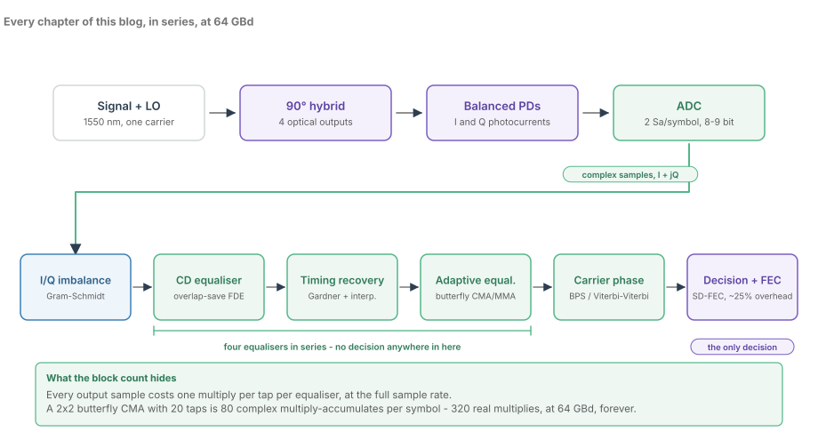
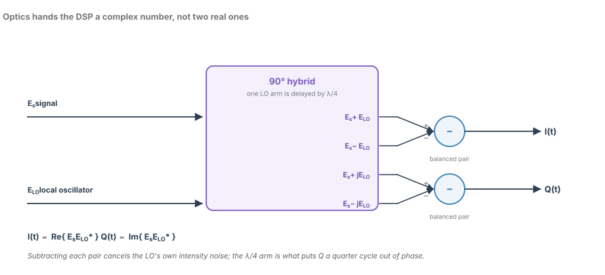
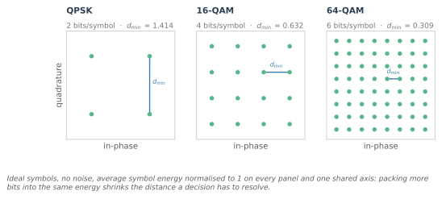
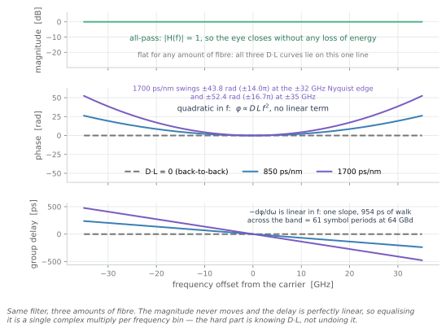
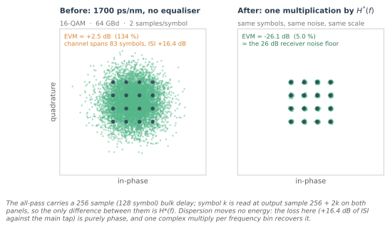
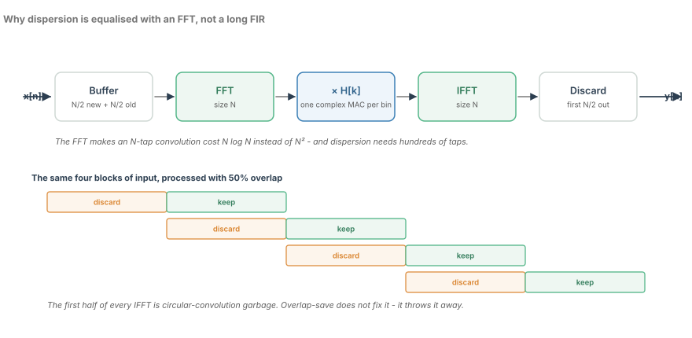
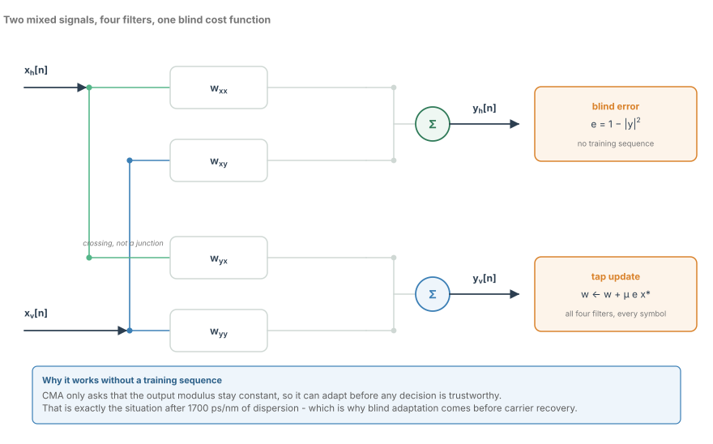
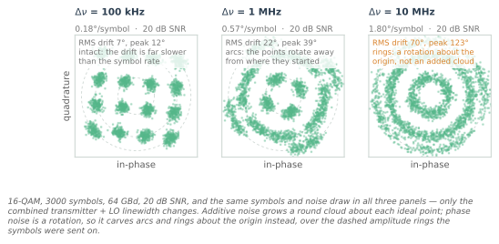

The Coherent Optical Receiver: A DSP Pipeline Tour
From the 90-degree hybrid to decoded bits, block by block, with the sample-rate and resolution budget for each stage.
A 64 GBd dual-polarisation 16-QAM link puts 512 Gb/s on one wavelength. Recovering it takes an optical hybrid, four photodiodes, four ADCs and six DSP blocks in series — and the most interesting thing about the chain is how little any block may assume about its input. The adaptive equaliser cannot use decisions; the carrier estimator cannot see one polarisation until the equaliser has separated them; the dispersion equaliser can use neither decisions nor a training sequence. Only the last block may commit to a bit.
That order is forced by what each impairment does, and getting it wrong is one of the few genuinely unrecoverable DSP mistakes: put the polarisation-mixing equaliser before the dispersion equaliser and it converges onto the wrong answer, because at 134% EVM every decision it sees is noise.
Every earlier post on this blog is one block of this pipeline. Here they run in series, on one waveform, sharing a power budget and a converter that delivers 5.5 effective bits.
The chain, and the one decision at the end

The front end is four optical blocks and one converter: a 1550 nm signal and a local oscillator, a 90° hybrid with four outputs, balanced photodiodes subtracting them in pairs into I and Q photocurrents, and ADCs sampling both at 2 samples per symbol — 128 GSa/s at 64 GBd — with 8 or 9 nominal bits that behave like 5.5.
After the ADC it is all arithmetic, and the figure groups it deliberately. I/Q correction, the dispersion equaliser, timing recovery and the adaptive equaliser form four filters in series with no decision anywhere in them. Then carrier phase. Then, alone, the decision and the FEC.
| Block | What it removes | The number that sets it |
|---|---|---|
| 90° hybrid, balanced PDs | the real-signal ambiguity | a few degrees of phase error |
| I/Q correction | the mirror image | 40 dB of image rejection |
| CD equaliser (FDE) | 1700 ps/nm of quadratic phase | an 83-symbol channel |
| Timing recovery | sampling phase error | 2 samples per symbol |
| Butterfly equaliser | the 2×2 polarisation mixing | 320 real multiplies per symbol |
| Carrier phase | laser phase drift | 0.57°/symbol at 1 MHz |
| Decision and FEC | whatever is left | 2e-2 in, 1e-15 out |
Two numbers set the budget. Two samples per symbol: at one, the sampler must land on the pulse peak and timing recovery always has residual jitter, whereas the second sample gives the equaliser a half-symbol grid and turns timing recovery into a filtering problem. And 5.5 effective bits, which is what an 8-bit converter degrades to across 64 GHz of input bandwidth.
Where the complex signal comes from

The most underrated component in a coherent receiver computes nothing. The 90° hybrid mixes the signal field $E_s$ with the local oscillator $E_{lo}$ and, via a quarter-wave delay in one LO arm, produces $E_s \pm E_{lo}$ and $E_s \pm jE_{lo}$. Subtract each pair on a balanced photodiode and the in-phase output is
with the same expression on the delayed pair giving $4\,\mathrm{Im}\{E_s E_{lo}^{*}\}$.
The LO's intensity noise is common to both arms of a pair, so the subtraction cancels it — which is why the local oscillator can be far stronger than the signal. The signal–LO beat survives, four times larger in amplitude than a single-ended detector gives, and the $\lambda/4$ delay makes the two beats orthogonal: I and Q are independent measurements, not two copies of one.
That is the sampling chapter's argument one level up: direct detection discards the phase of the field, while a coherent receiver keeps it optically. The first job of the DSP is not to create the complex signal but to repair the optics that made it.
I/Q imbalance is the tightest analogue number in the receiver
A gain error $\epsilon$ between I and Q, or a quadrature error $\phi$ in radians, turns the constellation into itself plus a mirrored copy reflected about DC. The image rejection ratio is roughly
so 1% of amplitude error alone gives about 46 dB, 1° of quadrature error about 41 dB, and both together almost exactly 40 dB. That is not a statement about one component but about the match between two photodiodes, two transimpedance amplifiers and two ADC input networks, held across 32 GHz. Calibrating at DC is easy; holding 1% and 1° at 32 GHz is why this is usually the tightest analogue requirement in the receiver.
The digital fix is Gram-Schmidt, and it is almost embarrassingly cheap: estimate the 2×2 covariance of I and Q over a few thousand samples, form the decorrelating matrix, apply it. Four multiplies per sample, against the thousands per symbol the butterfly will spend later.
Where it runs is what matters. It must precede anything that assumes circular symmetry: the $M$-th power in Viterbi–Viterbi assumes an undistorted constellation, and CMA's modulus assumes known rings. An image breaks both. The butterfly can absorb a static imbalance into its 2×2 matrix, but that spends taps on something four multiplies remove exactly.
The alphabet the decisions are made against

Every equaliser here is restoring these three constellations, normalised to the same average symbol energy. The distance a decision must resolve falls from 1.414 for QPSK to 0.632 for 16-QAM to 0.309 for 64-QAM — the same numbers as 7.0 dB and 6.2 dB of required SNR. That ladder is why FEC overhead exists, and why a 400G and a 600G link on the same fibre are different products, not different settings.
It is also where converter resolution becomes a link-budget term. At 5.5 effective bits the quantisation SNR is $6.02 \times 5.5 + 1.76 \approx 35$ dB, which sounds like ample headroom over the roughly 20 dB that 16-QAM needs at 2e-2 pre-FEC. But the AGC must leave backoff for the waveform's peak-to-average ratio, and every dB of backoff goes straight back to the quantisation floor: at 5 dB of backoff the converter costs about 0.4 dB. The ADC is before every equaliser, so nothing downstream can take it out.
Chromatic dispersion is an all-pass filter

Chromatic dispersion delays different optical frequencies by different amounts, and as a baseband filter on the frequency offset it is
with $D$ in ps/(nm·km) and $L$ in km. The phase is quadratic; the magnitude is exactly one. The standard single-mode figure is $D = 17$ ps/(nm·km), and over 100 km that is 1700 ps/nm — 1.7 s/m in SI, since 1 ps/nm is exactly $10^{-3}$ s/m.
The figure shows what that means. The magnitude is flat at 0 dB across the band, deviating from unity only at the level of floating-point noise. The phase has swung $\pm 43.8$ rad — nearly fourteen full turns — by the edge of the 32 GHz Nyquist band, and flips sign with frequency. The group delay is a straight line: a chirp, 954 ps of walk across the band, 61 symbol periods at 64 GBd. A pulse leaves smeared over tens of symbols, and not one photon is lost.
The judgement is blunt: dispersion is the one impairment here you should never track adaptively. It is known from the route, it changes only when the route changes, and it is identical on both polarisations. Estimate $D \cdot L$ once and hold it — the hard part is knowing it, not undoing it.
What the damage looks like before you undo it

Two panels, same symbols, same noise draw, same time base — symbol $k$ is read at output sample $256 + 2k$ in both. The only difference is one multiplication by $H^{*}(f)$.
Before it, the EVM is +2.55 dB, or 134%, and the symbol-spaced channel spans 83 symbols with ISI energy 16.4 dB above the main tap: more energy arrives in the echoes than in the symbol you want. That is why nothing decision-directed can run first.
After it, the EVM is -26.1 dB — 4.97% — exactly the 26 dB receiver noise floor the simulation ran at. The all-pass rotates the noise with the signal, and no equaliser undoes noise it did not add, so this is the best any equaliser can do. It is also the test I would run on any FDE: known $H(f)$, known SNR, and check that the equalised EVM equals the noise floor.
The frequency-domain equaliser, by overlap-save

An $N$-point FFT makes an $N$-tap convolution cost $N \log N$ instead of $N^2$. Implement that 512-tap filter directly in time and it costs 512 complex multiplies per sample; the overlap-save equaliser costs about $\log_2 512 + 1 = 10$ — a factor of fifty for this link, and worse for every extra 100 km of fibre.
The catch is the boundary. Two multiplied DFTs give a circular convolution: the tail wraps onto the front of the block, at the same size as the signal rather than as a rounding error. Overlap-save does not repair it. Buffer $N$ samples whose first $N/2$ are the previous block's second half; transform, multiply by $H[k]$, inverse-transform; discard the first $N/2$ outputs and keep the second half.
That 50% overlap is the price of never thinking about the boundary again. Zero-padding to $2N$ so the transform cannot wrap costs about the same for the same useful output; both pay roughly a factor of two, and overlap-save has one fewer buffer and no state to unwind, which is why it ships.
The filter $H[k]$ is static, so it is computed once and stored. It need not be: the same bin-wise multiply can carry a frequency-domain LMS update at the same cost per bin, which is how you handle unknown dispersion. It also mops up front-end skew, the match filter and any fixed phase tilt — one multiply per bin, several jobs.
Adaptive equalisation: the butterfly and CMA

After dispersion is gone, the polarisations are still superimposed. The fibre's polarisation state is an unknown 2×2 unitary matrix — rotation, polarisation-mode dispersion, polarisation-dependent loss, and whatever I/Q error the front end left behind. It drifts with temperature, mechanical stress and acoustic vibration: too fast for static calibration, slow enough for a filter with a few tens of taps.
The butterfly applies four FIR filters,
and its input rails cross without joining. The figure labels that crossing, because it is the demultiplexing. CMA adapts the filters with a cost function that never mentions the transmitted data:
It is blind: no training sequence, no decisions. That is the only thing that can work here, where the constellation is a 134% smear and a decision-directed LMS would train on noise. CMA asks only that the output modulus stay constant, which is a property of the alphabet rather than of a decision.
Which modulus depends on the alphabet. QPSK has one radius, and plain CMA is exactly right. 16-QAM has three rings and 64-QAM nine, and a single-modulus error term drags the inner rings out and the outer rings in, settling at a compromise with several dB of residual error — plain CMA on 64-QAM is visibly wrong, corners eroded and centre bloated. Multi-modulus CMA and radius-directed equalisation pick the modulus from the nearest ring, which needs a rough amplitude estimate first. Start-up is CMA on the outer ring, then a hand-off to MMA once carrier recovery locks.
The tap count is a power decision, not an algorithmic one. Twenty taps across four filters is 80 complex multiply-accumulates per symbol — 320 real multiplies, sustained at 64 GBd — and another 16 real MACs per symbol for every extra tap. Twenty taps buys a few tens of ps of PMD and the residual dispersion error; it does not buy long channel memory, which is why the FDE sits in front.
Carrier phase: a rotation, not a translation

The laser's phase wanders, and transmitter and local oscillator both contribute. Each symbol collects a Gaussian phase increment of variance $2\pi \Delta\nu T_s$ and accumulates it, so the carrier phase is a Wiener process: at 1 MHz of combined linewidth and 64 GBd, 0.57° per symbol. The figure varies only that linewidth, over three panels.
Additive noise grows a round cloud about each ideal point. Phase noise rotates the whole constellation by a common angle, so points wander along arcs about the origin: 22° RMS over 3000 symbols at 1 MHz, 70° RMS at 10 MHz, where the constellation has become rings. Averaging cannot help — the average of a rotating constellation is a shorter rotating constellation — and the walk grows only as the square root of elapsed symbols.
Viterbi–Viterbi handles constant-modulus formats. Raise the symbol to the $M$-th power, which multiplies the phase by $M$ and strips the data — for QPSK every symbol becomes a constant — average over a window, divide the argument by $M$. Two consequences are unavoidable: the $M$-th power amplifies the noise with the signal, and the division leaves the phase known only modulo $2\pi/M$, so the FEC receives a constellation rotated by an unknown multiple of 90°.
For 16-QAM and 64-QAM the $M$-th power no longer strips the modulation, so the options are QPSK partitioning — estimate only on symbols near the corners — or blind phase search: try $B$ candidate phases, rotate, slice, accumulate distance over a window, keep the best. BPS assumes nothing about the alphabet, which is why it works at 10 MHz on 64-QAM. It also costs $B$ rotate-and-slice operations per symbol — 640 per symbol for 32 candidates over a 20-symbol window, around $8 \times 10^{13}$ per second at 64 GBd across two polarisations.
The window has an optimum. Tracking error grows with the window, because the phase wanders inside it; noise error falls, because more symbols are averaged. With the tracking term as $\sigma_\delta^2 N^2/12$ and the noise term as $\sigma_n^2/N$, the minimum sits at
At 20 dB SNR, $\sigma_n^2 \approx 1/(2\,\mathrm{SNR}) = 0.005$ rad²; at 1 MHz over 64 GBd, $\sigma_\delta^2 = 9.8 \times 10^{-5}$ rad². Seven symbols, and a residual phase error near 1.9° RMS costing about 0.45 dB. Doubling the SNR or halving the linewidth buys only 26% more window, so this is not a knife-edge — but a receiver designed for a 100 kHz laser and deployed with a 2 MHz one will not fail loudly. It will lose half a dB and nobody will know why.
The decision, and what the FEC pays for
Everything so far has been blind and uncomfortable about committing. The slicer is the first block that assumes it knows what was sent — three thresholds per axis for 16-QAM, at 0 and $\pm 0.632$. In a modern product it is a demapper, handing the soft-decision FEC a log-likelihood ratio per bit.
Soft FEC overheads run roughly 15–25%; the post-FEC target is around 1e-15; the pre-FEC operating point is about 2e-2, one bit in fifty wrong at the demapper. It is worth stating plainly that a working 400G link runs at a 2% raw error rate. The FEC turns that into fewer than one error in $10^{15}$: thirteen orders of magnitude of Shannon gain, and what every equaliser here has been buying margin for.
The rate arithmetic follows. 64 GBd, dual polarisation, 16-QAM is $64 \times 4 \times 2 = 512$ Gb/s gross; 25% overhead leaves about 410 Gb/s of payload. The same 64 GBd on 64-QAM gives 614 Gb/s net, for the 6.2 dB the constellation cost.
So the pre-FEC number is the real specification. No block has to beat 2e-2 at end of life, at the worst OSNR and dispersion in the deployment; every dB above that is power you did not have to burn.
What to carry forward
- The chain is ordered by what each block may assume: the FDE removes what is known, the butterfly removes what is unknown, the carrier loop removes a rotation, and only then does anything decide.
- Dispersion is an all-pass with quadratic phase: no energy is lost, the eye closes anyway, and one complex multiply per bin reopens it.
- Overlap-save discards the first half of every IFFT — the cheapest way to buy a linear convolution from a circular one.
- CMA is blind, and that is the point. On QAM, use a modulus per ring.
- Phase noise is a rotation, so it needs a tracker, not an averager, and its window has a derivable optimum.
- The FEC turns 2e-2 into 1e-15, and so defines what good enough means for every block before it.